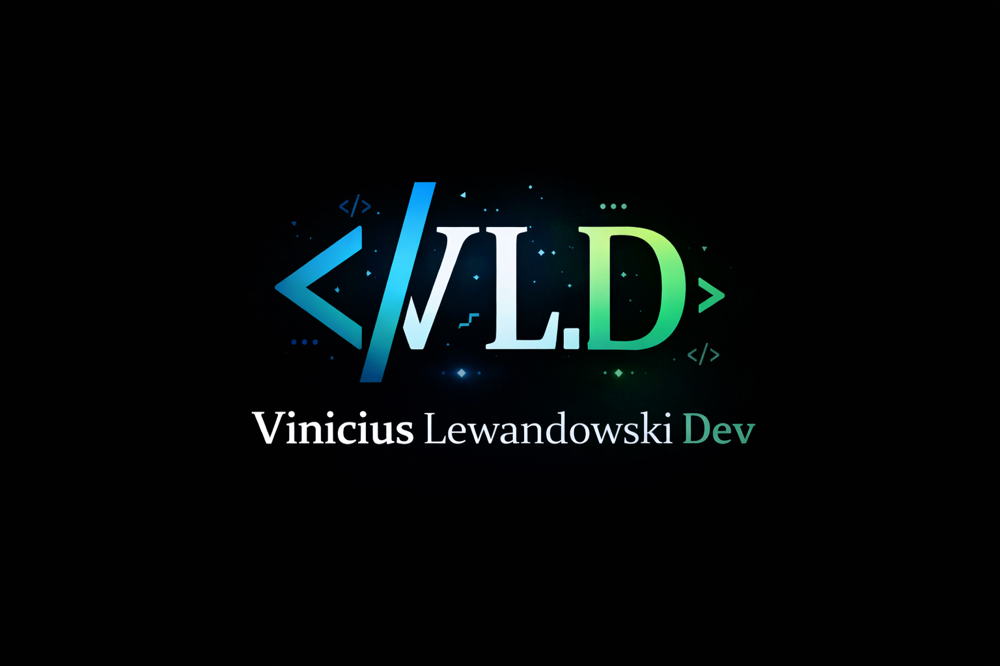
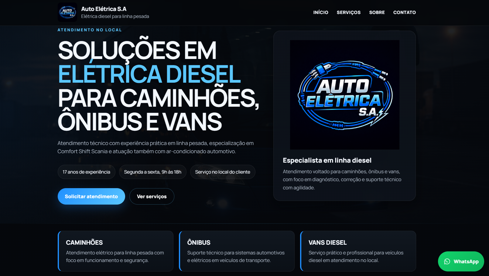
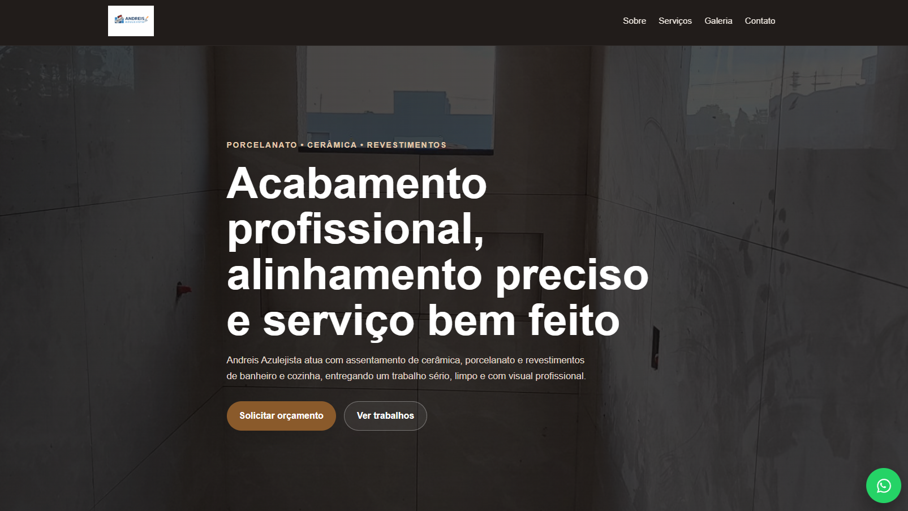
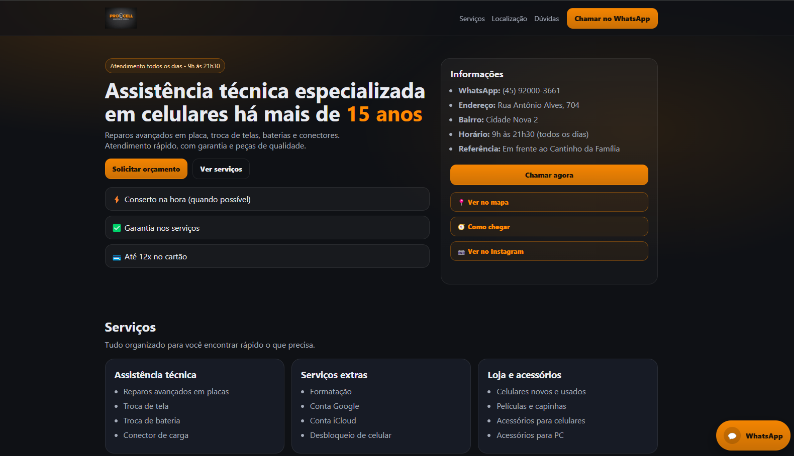
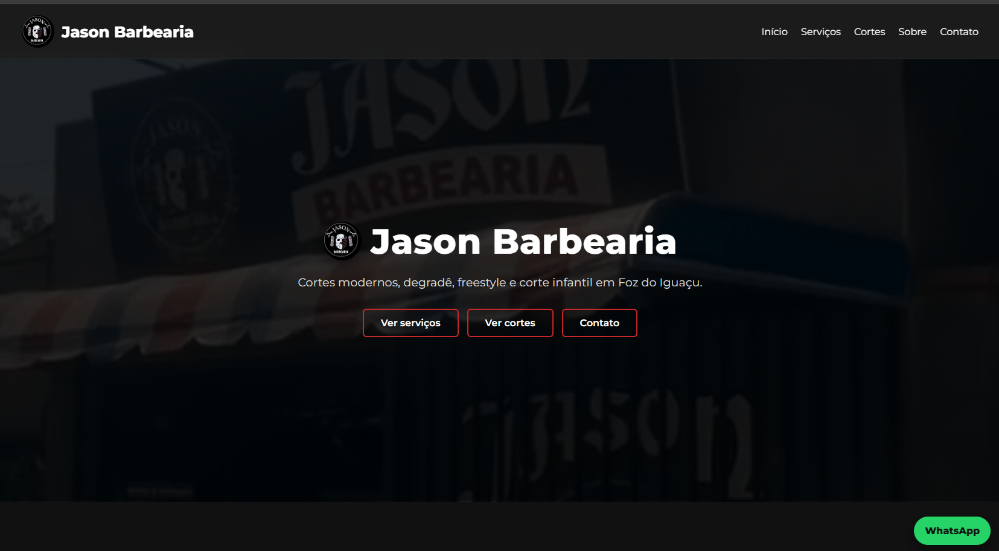

01
Site profissional
Página moderna para apresentar seus serviços, localização, diferenciais e gerar contato direto pelo WhatsApp.
Eu crio sites, cardápios digitais e sistemas simples para negócios locais que querem mais confiança online, mais organização e mais pedidos no WhatsApp.

Soluções pensadas para negócios locais venderem melhor, parecerem mais profissionais e facilitarem o contato com o cliente.
Página moderna para apresentar seus serviços, localização, diferenciais e gerar contato direto pelo WhatsApp.
Estrutura ideal para tabacarias, lojas, assistência técnica, estética, alimentação e outros negócios que precisam mostrar produtos com clareza.
Painel administrativo, gestão de produtos e controle de caixa para trazer mais organização para o dia a dia.
Projeto desenvolvido para a Quinta Essência com cardápio digital, painel administrativo e controle de caixa.
O cliente escolhe os itens e envia o pedido com muito mais facilidade.
Cadastro, edição, status, destaques e organização dos produtos em um painel próprio.
Acompanhamento de pedidos, valores e operação diária com mais controle.
Se o seu negócio precisa vender melhor, organizar pedidos e transmitir mais profissionalismo, eu posso montar uma estrutura assim para você.
Quero um sistema assimProjetos reais voltados para negócios locais, com foco em apresentação profissional, contato rápido e presença digital mais forte.

Site criado para fortalecer a presença digital da empresa e facilitar o atendimento.

Estrutura pensada para valorizar os serviços, mostrar os trabalhos e facilitar o orçamento.

Página criada para organizar serviços, localização e contato de forma rápida e clara.

Projeto voltado para apresentação visual mais forte e contato fácil para o cliente.
Meu foco é criar páginas e sistemas simples que deixem o negócio mais profissional, mais organizado e mais fácil de ser encontrado e contatado.
Trabalho com projetos voltados para empresas locais que precisam melhorar a imagem, facilitar o atendimento e transmitir mais confiança para novos clientes.
Me chama no WhatsApp e eu te mostro uma estrutura pensada para o seu tipo de negócio. A ideia é simples: mais presença, mais confiança e mais facilidade para o cliente entrar em contato.